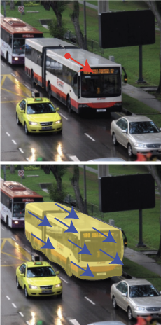
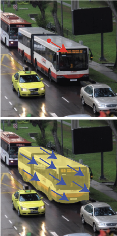
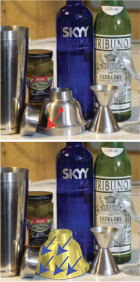
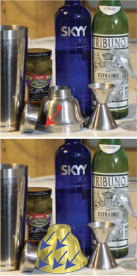

Spelke Objects: defining segmentation based on motion coherence
Drawing from developmental psychology, we introduce the notion of Spelke Objects—a definition of objecthood inspired by how infants naturally parse the visual world. Infants instinctively segment their environment into bounded units that move as cohesive wholes, enabling them to track and predict object behavior under physical forces and laying the groundwork for intuitive physical reasoning.
Existing segmentation datasets like COCO and ADE20K define segments through semantic labels (e.g. car, tree, sky). While useful, these categories fail to capture how objects actually move or interact physically, overlooking the critical properties that determine how segments respond to applied forces.
Spelke segments thus offer a more natural alignment with physical manipulation tasks by identifying regions that respond coherently to forces. This grounding enables more reliable prediction of interaction outcomes—essential for common robotics tasks like grasping, pushing, and object rearrangement. By focusing on motion coherence rather than semantic categories, this approach provides robots with a more actionable understanding of their physical environment.


 


 
